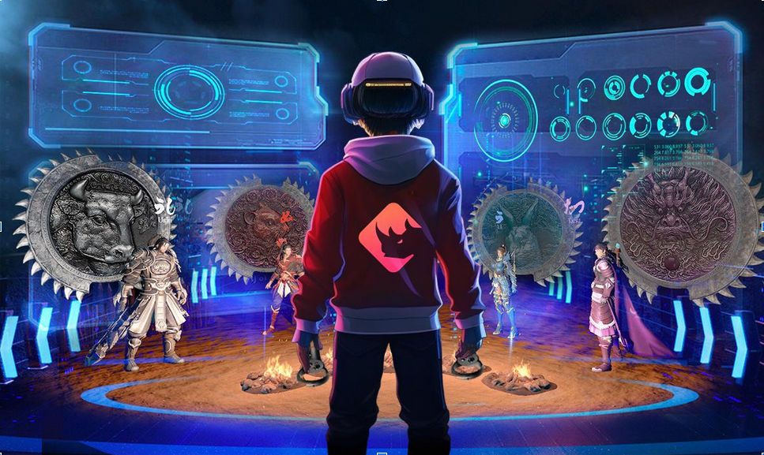

Dynamic Integration: The Marriage Between Artificial Intelligence and Virtual Reality
The intersection of Artificial Intelligence (AI) and Virtual Reality (VR) has unleashed a technological revolution, providing more immersive and interactive experiences. The fusion of these technologies not only redefines how we interact with virtual environments but also broadens the horizons of computational intelligence and user experience.
The Integration of AI and VR for Virtual Worlds
In the realm of virtual environment creation, AI emerges as a driving force. Intelligent algorithms are employed in generating landscapes, characters, and objects, bestowing a more authentic and dynamic virtual reality. This marriage of AI and VR results in digital worlds that adapt to user interactions, intelligently responding to every movement and decision.
The use of AI and VR not only for professional settings but to provide unforgettable experiences for personal entertainment
User experience customization reaches a new level with the integration of these technologies. AI analyzes user behavior, shaping the narrative, challenges, and elements of the virtual environment based on individual preferences and skills. Thus, the experience becomes unique and engaging, providing a level of personalized interactivity that transcends conventional boundaries.
Interactivity is heightened with the use of AI to create more intelligent and responsive non-playable characters (NPCs). The presence of virtual agents that act naturally and challengingly enhances immersion, making interactions more meaningful and complex. The AI's ability to learn from user actions contributes to a constant evolution of the experience, adapting to choices and strategies adopted.
The analysis of facial expressions and emotions through AI, when integrated with VR, adds an additional layer of realism. Facial recognition allows dynamic adjustments in the narrative or virtual environment based on perceived emotions, promoting a sensitive and personalized response.
 AI being implemented in VR games for an enhanced user experience.Everyday use cannot be overlooked
In the field of training and simulation, VR allied with AI provides ideal virtual environments for algorithm training. Simulated scenarios, where real-world data collection is challenging, become fertile grounds for the development and enhancement of AI systems.
Furthermore, AI contributes to the optimization of navigation in virtual environments, making it more intuitive and adaptive to user preferences. Machine learning is employed to improve the quality of graphics and real-time rendering, creating a visually impactful and immersive experience.
The presence of AI-powered virtual assistants within VR environments also stands out as an important facet. These assistants provide real-time information, guide users, and facilitate interaction, further enriching the virtual experience.
Can we expect even more from this integration in the future?
In summary, the interconnection between Artificial Intelligence and Virtual Reality redefines the limits of what is possible. We are witnessing the creation of virtual environments that not only mimic reality but also adapt, evolve, and intelligently respond to human actions and emotions. This dynamic marriage promises to continue shaping the future of digital interaction and immersive experiences, offering a glimpse of the unexplored potential that the convergence of these technologies can provide.